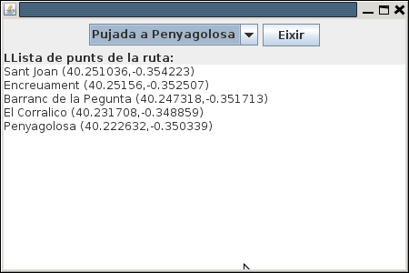
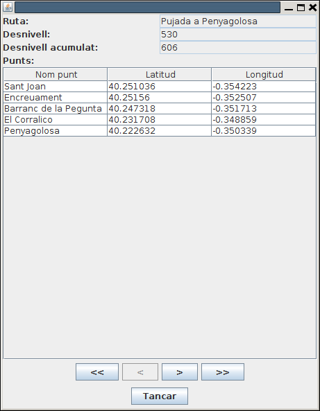
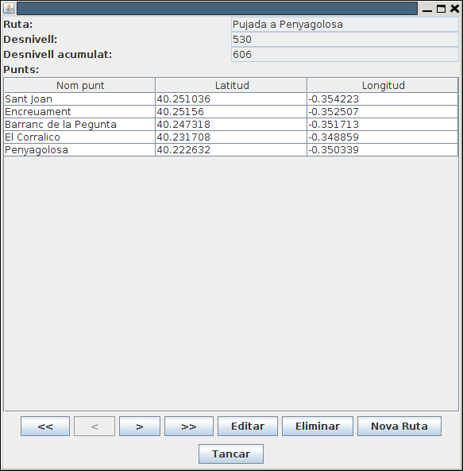
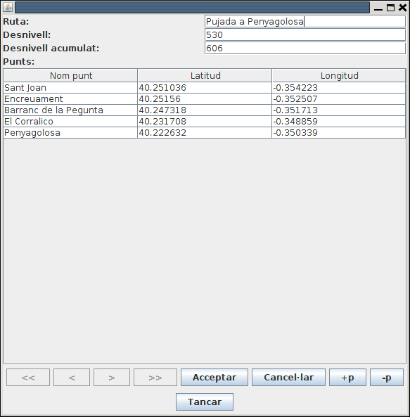
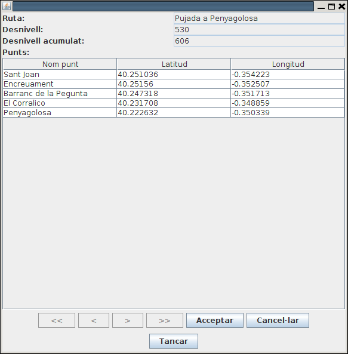
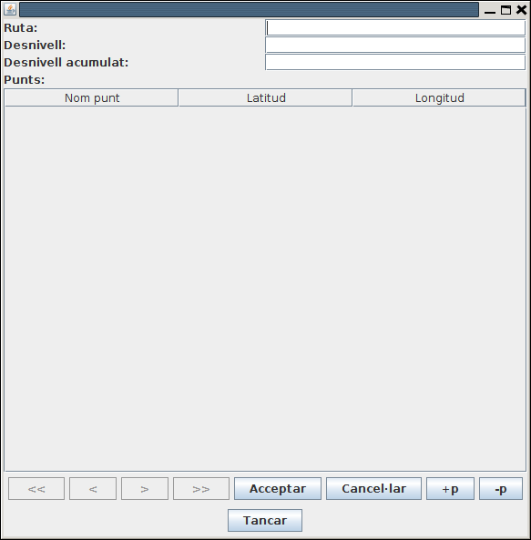

Exercicis
Els següents exercicis, posa'ls tots en un paquet del projecte Tema4 anomenat Exercicis
Exercici 4_1
Crea una classe executable (amb main) anomenada CreaTaulesRuta que cree les taules necessàries per a guardar les dades de les rutes en una Base de Dades SQLite anomenada Rutes.sqlite.
Han de ser 2 taules:
- RUTES: que contindrà tota la informació del conjunt de la ruta. La clau principal s'anomenarà num_r (entera). També guardarà el nom de la ruta (nom_r), desnivell (desn) i desnivell acumulat (desn_ac). Els tipus d'aquestos tres camps últims seran de text, enter i enter respectivament.
- PUNTS: que contindrà la informació dels punts individuals de les rutes. Contindrà els camps num_r (número de ruta: enter) , num_p (número de punt: enter), nom_p (nom del punt: text) , latitud (número real) i longitud (número real). La clau principal serà la combinació num_r + num_p . Tindrà una clau externa (num_r) que apuntarà a la clau principal de RUTES.
Adjunta tot el projecte, i també la Base de Dades Rutes.sqlite (normalment estarà dins del projecte)
Exercici 4_2
Crea una altra classe executable anomenada PassarRutesObjSQLite que passe les dades del fitxer Rutes.obj a les taules de Rutes.sqlite.
Per a major comoditat copiat el fitxer Rutes.obj que vam fer al projecte Tema3 dins d'aquest projecte, a més de les classes Coordenades.java, PuntGeo.java i Ruta.java dins del paquet. Si el paquet s'anomena igual en els dos projectes (jo us havia suggerit Exercicis) no hauria d'haver cap problema.
Concretament en el trasvassament d'informació:
- Per a cada ruta s'ha de considerar el número de ruta, que s'anirà incrementant, i a més serà la clau principal. La primera ruta ha de ser la número 1. A banda han d'anar la resta de camps.
- Per a cada punt s'ha de guardar el número de ruta i el número de punt (s'aniràincrementant des de 1 per a cada ruta). A banda han d'anar la resta de camps.
- T'aconselle vivament que abans d'executar les sentències SQL d'inserció, les tragues per pantalla, per veure si la sintaxi és correcta. Quan totes siguen correctes, pots substituir l'eixida per l'execució de les sentències.
- Per últim intenta capturar els errors per a traure missatges comprensibles.
Adjunta tot el projecte, i també la Base de Dades Rutes.sqlite, que normalment estarà situada dins del projecte
Exercici 4_3
Crea un classe anomenada Vis_Rutes_SQLite, que mostre les rutes amb un aspecte similar a l'Exercici 3_4, però accedint ara a les dades guardades en Rutes.sqlite:

Podríem mantenir la connexió fins que s'aprete el botó d'Eixir, que és quan la tancaríem.
Ací teniu l'esquelet dels programes.
import java.awt.BorderLayout;
import java.awt.FlowLayout;
import java.awt.event.ActionEvent;
import java.awt.event.ActionListener;
import java.sql.Connection;
import java.util.ArrayList;
import javax.swing.JButton;
import javax.swing.JComboBox;
import javax.swing.JFrame;
import javax.swing.JLabel;
import javax.swing.JPanel;
import javax.swing.JTextArea;
public class Vis_Rutes_SQLite_Pantalla extends JFrame implements ActionListener{
JComboBox combo;
JButton eixir = new JButton("Eixir");
JTextArea area = new JTextArea();
Connection con;
public void iniciar(){
// sentències per a fer la connexió
this.setBounds(100, 100, 450, 300);
this.setLayout(new BorderLayout());
JPanel panell1 = new JPanel(new FlowLayout());
JPanel panell2 = new JPanel(new BorderLayout());
this.add(panell1,BorderLayout.NORTH);
this.add(panell2,BorderLayout.CENTER);
ArrayList<String> llista_rutes = new ArrayList<String>();
// sentències per a omplir l'ArrayList amb el nom de les rutes
combo = new JComboBox(llista_rutes.toArray());
panell1.add(combo);
panell1.add(eixir);
panell2.add(new JLabel("LLista de punts de la ruta:"),BorderLayout.NORTH);
panell2.add(area,BorderLayout.CENTER);
this.setVisible(true);
combo.addActionListener(this);
eixir.addActionListener(this);
this.setDefaultCloseOperation(JFrame.EXIT_ON_CLOSE);
}
@Override
public void actionPerformed(ActionEvent e) {
if (e.getSource() == combo){
//accions quan s'ha seleccionat un element del combobox, i que han de consistir en omplir el JTextArea
}
if (e.getSource() == eixir){
//accions quan s'ha apretat el botó d'eixir
}
}
}
public class Vis_Rutes_SQLite {
public static void main(String[] args) {
Vis_Rutes_SQLite_Pantalla finestra = new Vis_Rutes_SQLite_Pantalla();
finestra.iniciar();
}
}
Exercici 4_4
En aquest exercici anem a practicar la creació d'una classe que encapsule pràcticament tot el tractament de la Base de Dades, per a fer transparent el desfasament Objecte-Relacional. Per tant aquesta classe ha de ser capaç de llegir de les taules convertint a objectes, i també guardar la informació dels objectes en les taules. S'anomenarà GestionarRutesBD.
En un paquet nou del mateix projecte, anomenat util.bd haureu de fer la classe GestionarRutesBD, que és la que encapsularà tot. Internament només tindrà una propietat, la de connexió. Tindrà els següents mètodes:
- Constructor public GestionarRutesBD(): establirà la connexió amb la Base de Dades Rutes.sqlite (per comoditat en el directori del projecte). Si no existeixen les taules RUTES i PUNTS les haurà de crear (podeu utilitzar la sentència CREATE TABLE IF NOT EXISTS ...)
- public void close(): tancarà la connexió.
- public void inserir(Ruta r): Inserirà en la BD les dades corresponents a la ruta passada per paràmetre (inicialment s'aconsella únicament "imprimir" les sentències, per veure si són correctes). El num_r ha de ser el posterior a l'última existent, per exemple amb la consulta SELECT MAX(num_r) FROM RUTES
- public Ruta buscar(int i): torna la ruta amb el número passat com a paràmetre.
- public ArrayList<Ruta> llistat(): torna un ArrayList de Ruta amb totes les rutes de la Base de Dades.
- public void esborrar(int i): esborra la ruta amb el número passat com a paràmetre (recordeu que els punts de la ruta també s'han d'esborrar)
Per a provar-lo podeu incorporar l'executable (que té main) UtilitzarRutesBD. Hauríeu de comentar les línies que no s'utilitzen en cada moment. Per exemple, si ja heu aconseguit inserir la ruta, i continueu provant el programa per als mètodes buscar() i llistat(), comenteu la línia gRutes.inserir(r); per a no inserir-la més vegades.
public class UtilitzarRutesBD {
public static void main(String[] args) throws FileNotFoundException, IOException, ClassNotFoundException {
// Creació del gestionador
GestionarRutesBD gRutes = new GestionarRutesBD();
// Inserció d'una nova Ruta
String[] noms = {"Les Useres","Les Torrocelles","Lloma Bernat","Xodos (Molí)","El Marinet","Sant Joan"};
double[] latituds = {40.158126,40.196046,40.219210,40.248003,40.250977,40.251221};
double[] longituds = {-0.166962,-0.227611,-0.263560,-0.296690,-0.316947,-0.354052};
Ruta r = new Ruta();
r.setNom("Pelegrins de Les Useres");
r.setDesnivell(896);
r.setDesnivellAcumulat(1738);
for (int i=0;i<6;i++){
r.addPunt(noms[i], latituds[i], longituds[i]);
}
gRutes.inserir(r);
// Llistat de totes les rutes
ArrayList<Ruta> llista = gRutes.llistat();
for (int i=0;i<llista.size();i++){
llista.get(i).mostraRuta();
}
// Buscar una ruta determinada
gRutes.buscar(2).mostraRuta();
gRutes.close();
}
}
Exercici 4_5 (voluntari)
Crea el segünet mètode en la classe GestionarRutesBD:
public void guardar(Ruta r)
El que ha de fer aquest mètode és:
- Si no existeix la ruta, la inserirem
- Si ja existeix la ruta, la modificarem. Heu de parar especial atenció als punts. Potser el més còmode siga esborrar els punts de la ruta i tornar a crear-los
Considerarem que la ruta existeix si hi ha una amb el mateix nom.
Per a provar-lo, podeu utilitzar aquest programa principal.
import java.io.FileNotFoundException;
import java.io.IOException;
import java.util.ArrayList;
import util.bd.GestionarRutesBD;
import util.bd.Ruta;
import util.bd.PuntGeo;
public class UtilitzarRutesBD2{
public static void main(String[] args) throws FileNotFoundException, IOException, ClassNotFoundException {
// Creació del gestionador
GestionarRutesBD gRutes = new GestionarRutesBD();
Ruta r = gRutes.buscar(1);
r.mostraRuta();
r.setDesnivellAcumulat(606);
gRutes.guardar(r);
r = gRutes.buscar(2);
r.mostraRuta();
r.getLlistaDePunts().add(0, new PuntGeo ("Plaça M.Agustina", 39.988507,-0.034533));
gRutes.guardar(r);
System.out.println("Després de modificar");
r=gRutes.buscar(1);
r.mostraRuta();
r=gRutes.buscar(2);
r.mostraRuta();
gRutes.close();
}
}
Exercici 4_6 (voluntari)
Anem a fer molt més completa i atractiva l'aplicació gràfica de les rutes. Ens aprofitarem del construït en els exercicis 4.4 i 4.5, és a dir, la classe GestionarRutesBD, que encapsulava pràcticament l'accés a la BD, de manera que nosaltres obtenim (i guardem) objectes.
El programa mostrarà una ruta, i hi haurà també uns botons per anar a la primera, anterior, següent i última ruta. Hi ha també el botó de Tancar, que tancarà l'objecte GestionarRutesBD i eixirà del programa.
Per a omplir el JTable amb els punts, teniu un mètode que ho fa automàticament: plenarTaula(). Observeu quin és el seu paràmetre.
Aquest seria el seu aspecte:

Aquest seria el programa principal:
public class Rutes_SQLite_Complet {
public static void main(String[] args) {
Rutes_SQLite_Complet_pantalla finestra = new Rutes_SQLite_Complet_pantalla();
finestra.iniciar();
}
}I aquest l'esquelet del programa que ho fa tot. Vosaltres heu d'implementar els 3 mètodes del final.
import java.awt.FlowLayout;
import java.awt.GridLayout;
import java.awt.event.ActionEvent;
import java.awt.event.ActionListener;
import java.util.ArrayList;
import javax.swing.BoxLayout;
import javax.swing.JButton;
import javax.swing.JFrame;
import javax.swing.JLabel;
import javax.swing.JPanel;
import javax.swing.JScrollPane;
import javax.swing.JTextField;
import javax.swing.JTable;
import util.bd.PuntGeo;
import util.bd.Ruta;
public class Rutes_SQLite_Complet_pantalla extends JFrame implements ActionListener {
private static final long serialVersionUID = 1L;
ArrayList<Ruta> llista = new ArrayList<Ruta>();
int numActual;
Ruta rutaActual;
JLabel etiqueta = new JLabel("");
JLabel etNom = new JLabel("Ruta:");
JTextField qNom = new JTextField(15);
JLabel etDesn = new JLabel("Desnivell:");
JTextField qDesn = new JTextField(5);
JLabel etDesnAcum = new JLabel("Desnivell acumulat:");
JTextField qDesnAcum = new JTextField(5);
JLabel etPunts = new JLabel("Punts:");
JTable punts = new JTable(1,3);
JButton primer = new JButton(" << ");
JButton anterior = new JButton(" < ");
JButton seguent = new JButton(" > ");
JButton ultim = new JButton(" >> ");
JButton tancar = new JButton("Tancar");
// en iniciar posem un contenidor per als elements anteriors
public void iniciar() {
getContentPane().setLayout(new GridLayout(0,1));
JPanel p_prin = new JPanel();
p_prin.setLayout(new BoxLayout(p_prin, BoxLayout.Y_AXIS));
// contenidor per als elements
JPanel panell1 = new JPanel(new GridLayout(0,2));
panell1.add(etNom);
qNom.setEditable(false);
panell1.add(qNom);
panell1.add(etDesn);
qDesn.setEditable(false);
panell1.add(qDesn);
panell1.add(etDesnAcum);
qDesnAcum.setEditable(false);
panell1.add(qDesnAcum);
panell1.add(etPunts);
JPanel panell2 = new JPanel(new GridLayout(0,1));
punts.setEnabled(false);
JScrollPane scroll = new JScrollPane(punts);
panell2.add(scroll, null);
JPanel panell5 = new JPanel(new FlowLayout());
panell5.add(primer);
panell5.add(anterior);
panell5.add(seguent);
panell5.add(ultim);
JPanel panell6 = new JPanel(new FlowLayout());
panell6.add(tancar);
getContentPane().add(p_prin);
p_prin.add(panell1);
p_prin.add(panell2);
p_prin.add(panell5);
p_prin.add(panell6);
setVisible(true);
pack();
primer.addActionListener(this);
anterior.addActionListener(this);
seguent.addActionListener(this);
ultim.addActionListener(this);
tancar.addActionListener(this);
inicialitzar();
VisRuta();
}
private void plenarTaula(ArrayList<PuntGeo> ll_punts){
Object[][] ll= new Object[ll_punts.size()][3];
for (int i=0;i<ll_punts.size();i++){
ll[i][0]=ll_punts.get(i).getNom();
ll[i][1]=ll_punts.get(i).getLatitud();
ll[i][2]=ll_punts.get(i).getLongitud();
}
String[] caps = {"Nom punt","Latitud","Longitud"};
punts.setModel(new javax.swing.table.DefaultTableModel(ll,caps));
}
@Override
public void actionPerformed(ActionEvent e) {
}
private void inicialitzar() {
}
private void VisRuta(){
}
}Exercici 4_7 (ampliació - voluntari)
Modifica l'aplicació anterior per a que es puguen modificar, esborrar i inserir les rutes.

- S'haurien de posar més botons: Editar, Eliminar i Nova Ruta.
- Estaria bé que en entrar a qualsevol de les opcions anteriors es desactivaren els botons de navegació, que desaparegueren els d'Editar, Eliminar i Nova Ruta, i que aparegueren els d'Acceptar i Cancel·lar.
- En tots els casos, si es cancel·la no es fa cap acció, però s'ha de tornar a l'estat anterior (primera imatge)
- EDITAR:
- S'han d'"activar" els controls per a poder modificar les dades.
- En cas d'acceptar s'ha de fer la modificació a partir del contingut de tots els controls (no cal detectar quins s'han modificat)
- En cas de cancel·lar, no es fa la modificació, i senzillament s'ha de tornar a visualitzar la ruta actual (com no s'ha fet cap canvi, apareixeran les dades anteriors)
- Per a afegir nous punts, es podria posar un botó per a afegir una nova línia al JTable, i un altre per a llevar una línia

- ELIMINAR:
- Si s'accepta, s'haurà d'esborrar la ruta, sinó tornar a visualitzar-la

- INSERIR:
- Haurà de mostrar tots els camps en blanc, i evidentment activats, per a poder introduir dades.
- En cas d'acceptar s'ha d'introduir la nova ruta.
- En cas de cancel·lar, estaria bé tornar a la que s'estava mostrant abans d'apretar el botó de nova ruta.
- Per a introduir nous punts, es podria posar un botó per a afegir una nova línia al JTable, i un altre per a llevar una línia

Nota
EL JTable de vegades és engorrós. Si s'està editant una casella, la informació no s'ha introduït encara, fins que no s'aprete enter, tab o amb el ratolí no s'aprete a algun altre lloc.Per a acabar la introducció de la informació que s'està editant, es podria executar el següent (per exemple quan s'ha apretat Acceptar):
if (punts.isEditing())
punts.getCellEditor().stopCellEditing();
on punts seria al JTable.
Aquest seria l'esquelet del programa, on hem posat 2 mètodes que poden anar bé per a activar i visualitzar uns botons o altres. I també activar els JTextField i el JTable.
import java.awt.FlowLayout;
import java.awt.GridLayout;
import java.awt.event.ActionEvent;
import java.awt.event.ActionListener;
import java.util.ArrayList;
import javax.swing.BoxLayout;
import javax.swing.JButton;
import javax.swing.JFrame;
import javax.swing.JLabel;
import javax.swing.JPanel;
import javax.swing.JScrollPane;
import javax.swing.JTextField;
import javax.swing.JTable;
import util.bd.PuntGeo;
import util.bd.Ruta;
import util.bd.GestionarRutesBD;
public class Rutes_SQLite_Avancat_pantalla extends JFrame implements ActionListener {
private static final long serialVersionUID = 1L;
GestionarRutesBD gBD = new GestionarRutesBD();
ArrayList<Ruta> llista = new ArrayList<Ruta>();
int numActual;
Ruta rutaActual;
boolean actualitzant = false;
String modificacio;
JLabel etiqueta = new JLabel("");
JLabel etNom = new JLabel("Ruta:");
JTextField qNom = new JTextField(15);
JLabel etDesn = new JLabel("Desnivell:");
JTextField qDesn = new JTextField(5);
JLabel etDesnAcum = new JLabel("Desnivell acumulat:");
JTextField qDesnAcum = new JTextField(5);
JLabel etPunts = new JLabel("Punts:");
JTable punts = new JTable(1, 3);
JButton primer = new JButton(" << ");
JButton anterior = new JButton(" < ");
JButton seguent = new JButton(" > ");
JButton ultim = new JButton(" >> ");
JButton tancar = new JButton("Tancar");
JButton editar = new JButton("Editar");
JButton eliminar = new JButton("Eliminar");
JButton nova = new JButton("Nova Ruta");
JButton acceptar = new JButton("Acceptar");
JButton cancelar = new JButton("Cancel·lar");
JButton mesP = new JButton("+p");
JButton menysP = new JButton("-p");
// en iniciar posem un contenidor per als elements anteriors
public void iniciar() throws ClassNotFoundException {
Class.forName("org.sqlite.JDBC");
getContentPane().setLayout(new GridLayout(0, 1));
JPanel p_prin = new JPanel();
p_prin.setLayout(new BoxLayout(p_prin, BoxLayout.Y_AXIS));
// contenidor per als elements
JPanel panell1 = new JPanel(new GridLayout(0, 2));
panell1.add(etNom);
qNom.setEditable(false);
panell1.add(qNom);
panell1.add(etDesn);
qDesn.setEditable(false);
panell1.add(qDesn);
panell1.add(etDesnAcum);
qDesnAcum.setEditable(false);
panell1.add(qDesnAcum);
panell1.add(etPunts);
JPanel panell2 = new JPanel(new GridLayout(0, 1));
punts.setEnabled(false);
JScrollPane scroll = new JScrollPane(punts);
panell2.add(scroll, null);
JPanel panell5 = new JPanel(new FlowLayout());
panell5.add(primer);
panell5.add(anterior);
panell5.add(seguent);
panell5.add(ultim);
panell5.add(editar);
panell5.add(eliminar);
panell5.add(nova);
acceptar.setVisible(false);
panell5.add(acceptar);
cancelar.setVisible(false);
panell5.add(cancelar);
mesP.setVisible(false);
panell5.add(mesP);
menysP.setVisible(false);
panell5.add(menysP);
JPanel panell6 = new JPanel(new FlowLayout());
panell6.add(tancar);
getContentPane().add(p_prin);
p_prin.add(panell1);
p_prin.add(panell2);
p_prin.add(panell5);
p_prin.add(panell6);
setVisible(true);
ActivarAltres(true);
pack();
ActivarAltres(false);
primer.addActionListener(this);
anterior.addActionListener(this);
seguent.addActionListener(this);
ultim.addActionListener(this);
tancar.addActionListener(this);
editar.addActionListener(this);
eliminar.addActionListener(this);
nova.addActionListener(this);
acceptar.addActionListener(this);
cancelar.addActionListener(this);
mesP.addActionListener(this);
menysP.addActionListener(this);
inicialitzar();
VisRuta();
}
private void plenarTaula(ArrayList<PuntGeo> ll_punts) {
Object[][] ll = new Object[ll_punts.size()][3];
for (int i = 0; i < ll_punts.size(); i++) {
ll[i][0] = ll_punts.get(i).getNom();
ll[i][1] = ll_punts.get(i).getLatitud();
ll[i][2] = ll_punts.get(i).getLongitud();
}
String[] caps = { "Nom punt", "Latitud", "Longitud" };
punts.setModel(new javax.swing.table.DefaultTableModel(ll, caps));
}
@Override
public void actionPerformed(ActionEvent e) {
}
private void inicialitzar() {
}
private void VisRuta() {
}
private void ActivarAltres(boolean estat) {
}
private void ActivarQuadres(boolean estat) {
}
}I aquest el programa principal:
public class Rutes_SQLite_Avancat {
public static void main(String[] args) throws ClassNotFoundException {
Rutes_SQLite_Avancat_pantalla finestra = new Rutes_SQLite_Avancat_pantalla();
finestra.iniciar();
}
}Llicenciat sota la Llicència Creative Commons Reconeixement CompartirIgual 2.5